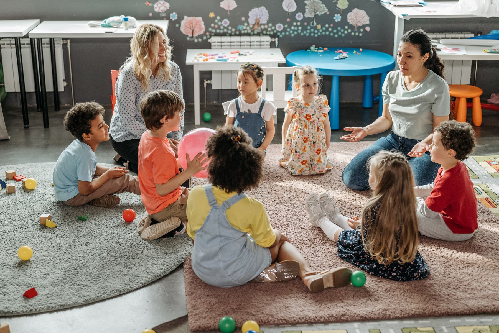
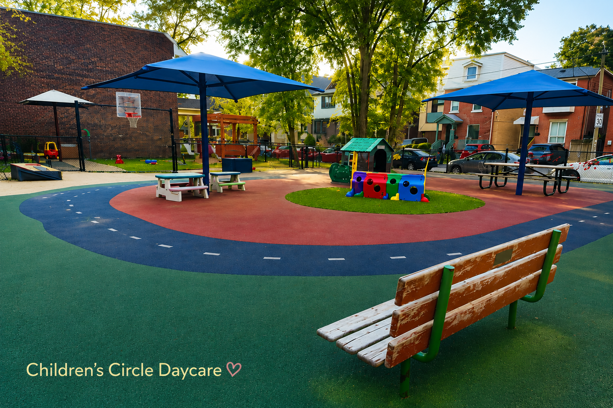

Over 50 Years
Trusted care for generations of Toronto families.
Non-profit childcare in Toronto
For over 50 years, Children’s Circle Daycare has provided nurturing, inclusive, play-based childcare for Toronto families.


About us
Children’s Circle Daycare is a non-profit, community-based childcare centre serving Toronto families for over 50 years. Our experienced RECE educators create a safe, inclusive environment where children learn through play, relationships, outdoor exploration, and everyday discovery.
Why families choose us
Trusted care for generations of Toronto families.
Community-focused decisions centred on children.
Warm professionals who understand early learning.
Fresh air, movement, and seasonal exploration.
Children investigate, create, build, and imagine.
Nourishing routines support growing bodies.
Programs


Language, movement, independence, routines, and early friendships.
Learn More
Creative projects, social skills, stories, blocks, music, and inquiry.
Learn More

Life at Children’s Circle
Featured events
Welcoming gatherings that help families connect with the centre community.
Simple, inclusive celebrations connected to the rhythms of the year.
Children plant, water, notice, and care for growing things.
Developing coordination, confidence, and healthy, active bodies.
Our program incorporated music through singing, rhythm, movement, and joyful group participation.
Neighbourhood exploration with careful routines and supervision.
Paint, collage, clay, loose parts, and child-led expression.
Parent testimonials
“The educators are kind, steady, and truly know our child. We feel included and informed every day.”
Samantha C.“As parents of four children, we couldn't imagine a better place to help nurture, educate and inspire our children than Children's Circle Daycare.”
Michael S.“Children’s Circle Daycare has given our family confidence, care, and a beautiful sense of community.”
Anthony B.FAQ
We are open Monday-Friday 7:30am - 6:00pm.
Healthy meals and snacks are part of the daily routine. Contact us for current menu details.
Download our waitlist form, complete and email back to us. Once we add you to the waitlist, you will receive a confirmation email.
Programs support infants, toddlers, preschool, kindergarten, and school age children.
Outdoor play is part of daily life whenever conditions allow.
Educators and centre staff communicate daily updates through our StoryPark app and other updates via email.
Visit or connect
Email us to ask about programs, availability, the waitlist, or booking a tour.
Toronto, Ontario
Phone: 416-461-5151
Email: info@childrenscircledaycare.com